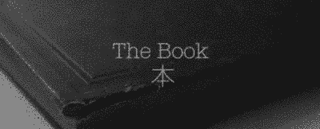

En 2016 realicé un cortometraje llamado «The book», me puse el reto de escribir un corto de ficción utilizando únicamente los recursos con los que contaba en ese entonces.
Al encontrarme tan limitado tuve que enmarcar las ideas y llevarlas por el camino de la ficción.
El resultado fue un cortometraje que habla sobre los universos paralelos, filmado en mi departamento (en proceso de remodelación en ese entonces) y con solo una cámara.
Fue sorprendente las puertas que me abrió, desde la realización de música para documentales y otros cortos así como la entrevista que puedes leer aquí:
Cortometraje "The Book"Con esta entrada quiero mencionar que en muchas ocasiones, no importa si tienes muchos o pocos recursos, sino el amor que tengas por crear algo y el interés en llevarlo a cabo hasta el final.
En el enlace podrás encontrar el link directo al corto así como algunas menciones sobre el proceso.
¿Con qué recursos cuentas actualmente para crear?
¿Cuáles son tus limitaciones y como las superas?
A veces considero interesante pensar en ello y recordar el cortometraje como una fuente de inspiración personal.
Gracias por leer
Por: Israel G. Bistrain 2021
Si lo deseas puedes seguirme en Mastodon:
@supersnufkin@mastodon.social